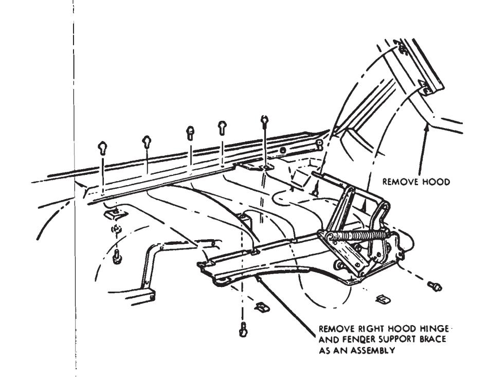
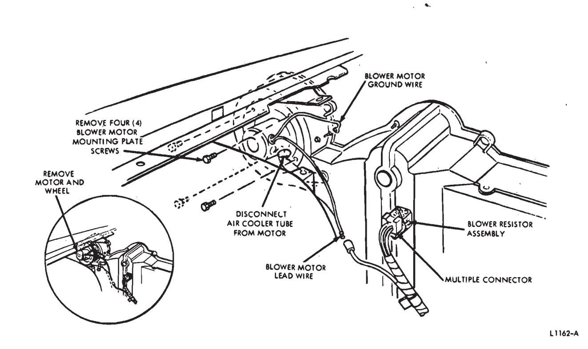
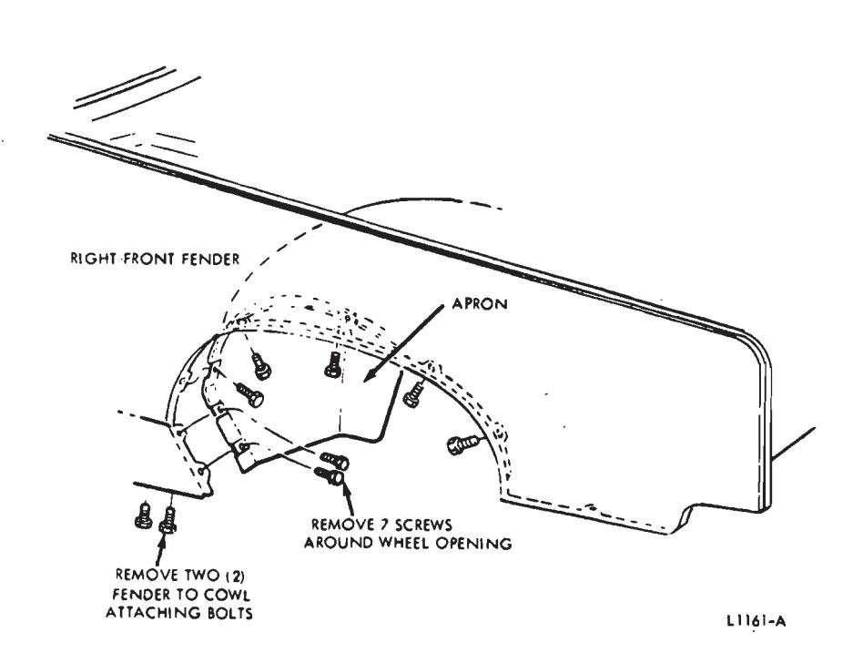
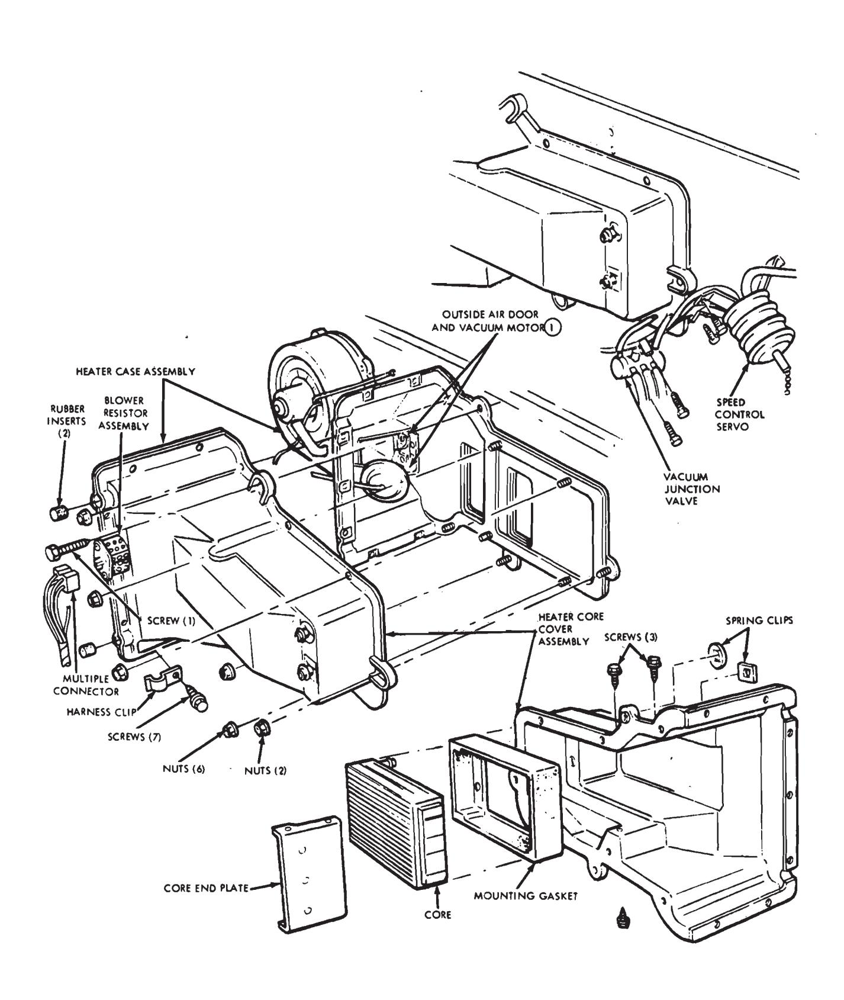
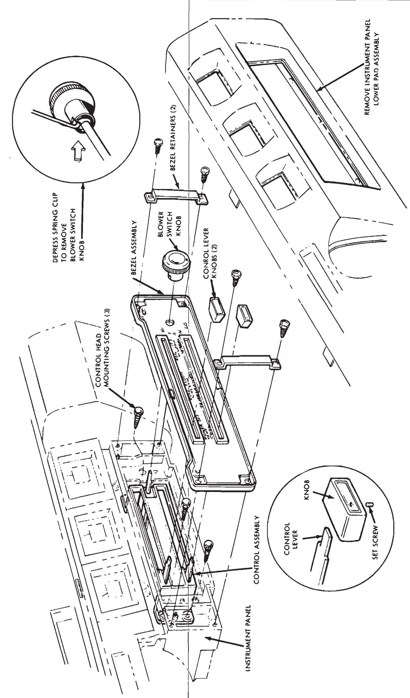
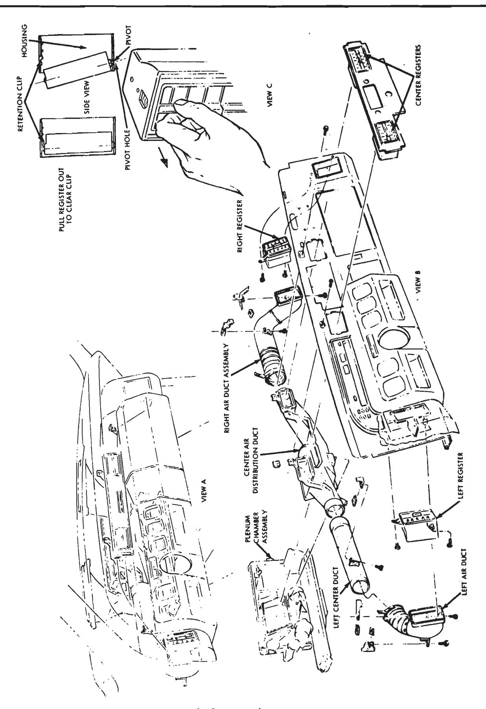

Heating Systems · 34-03-31d
Blower Motor and Wheel Assembly
Removal
-
Remove the hood (Group 43).
-
Remove the right hood hinge and right fender inner support brace as an assembly (Fig. 45).
-
Disconnect the blower motor air cooling tube from the motor (Fig. 46).
-
Disconnect the motor lead wire from the harness and the ground wire from the dash panel.
-
Disconnect the rear section of the right front fender apron from the fender around the wheel opening (7 screws) and remove the two lower fender-to-cowl mounting screws (Fig. 47).
-
Separate the fender apron from the fender wheel opening so that the apron can be pushed downward away from the blower motor.
-
Remove the four blower motor mounting plate screws. Move the motor and wheel forward out of the blower scroll and remove the assembly through the opening while applying pressure to the fender apron to enlarge the opening at the hinge area (Fig. 46).

Fig. 45 — Hood Hinge Removal—Lincoln Continental
Fig. 46 — Heater System Blower Motor Removal—Lincoln Continental
Fig. 47 — Right Fender Removal—Lincoln Continental
Installation
- Apply pressure to the fender apron to enlarge the opening and carefully insert the blower motor and wheel assembly through the opening to prevent damage to the blower wheel.
- Position the blower motor wheel assembly into the blower scroll and install the four blower motor mounting plate screws (Fig. 46).
- Position the rear section of the right front fender (Fig. 47) and install the seven attaching screws around the wheel opening and the two lower fender-to-cowl mounting screws.
- Connect the blower motor ground wire to the dash panel and the lead wire to the wire harness (Fig. 46)
- Connect the motor air cooling tube to the motor.
- Install the right hood hinge and fender inner support brace assembly (Fig. 45). 7. Install the hood (Group 43).
Heater Core
Removal
-
Drain the engine coolant.

Fig. 49 — Standard Heater Core Removal—Lincoln Continental
-
Disconnect the vacuum junction valve (Fig. 48) from the dash panel and move the valve and vacuum hoses away from the case.
-
Disconnect the speed control servo and bracket assembly from the dash panel (on vehicles so equipped) and move it away from the case.
-
Disconnect the multiple connector from the blower resistor and harness from the clip on the case.
-
Disconnect the heater hoses from the heater case and the hose support clamp from the case. Move the hoses and water valve away from the heater case.
-
Remove seven case cover-to-case flange attaching screws and the wire harness clip (Fig. 49).
-
Remove six case cover-to-back plate stud nuts.
-
Remove one upper case-to-dash panel mounting screw.
-
Remove two case-to-dash panel mounting stud nuts, one on the in-board mounting flange and one below the case on the lower flange.
-
Carefully move the heater core cover assembly forward to clear the mounting studs and lift it up and out of the vehicle.
-
Remove two spring clips from the core tubes on the front of the core cover (Fig. 49).
-
Remove three core end plate mounting screws and remove the plate.
-
Remove the heater core and mounting gasket assembly from the core cover and remove the gasket from the core.
Installation
- Assemble the heater core and mounting gasket assembly and position them in the heater core cover assembly as shown in Fig. 49.
- Position the core end plate and install the two upper and one lower mounting screws.
- Install the two core tube spring clips on the front of the core cover.
- Carefully position the heater core cover assembly on the heater case assembly mounting studs.
- Install the two case-to-dash panel mounting stud nuts, one on the inboard mounting flange and one below the case on the lower flange.
- Install the upper case-to-dash panel mounting screw.
- Install the six case cover-to-back plate stud nuts.
- Install the seven case coverto-case flange attaching screws and wire harness clip.
- Connect the heater hoses to the heater core tubes and secure the hoses and hose support clamp to the core cover with the retaining bolt. Position and secure the heater hose clamps at the heater core tubes.
- Plug in the multiple connector to the blower resistor and insert the wiring harness in the clip on the case.
- Position the speed control servo and bracket assembly (if so equipped) on the dash panel and secure with the two dash panel mounting screws.
- Position the vacuum junction valve on the dash panel and secure with the two dash panel mounting screws.
- Fill the system with coolant, start the engine and test the heater system for coolant leaks.
Heater Case Assembly
Removal
- Drain the engine coolant.
- Remove the hood (Group 43).
- Remove the right hood hinge and right front fender inner support brace as an assembly (Fig. 45).
- Disconnect the vacuum junction valve from the dash panel and move the valve and vacuum hoses away from the case (Fig. 48).
- Disconnect the speed control servo and bracket assembly from the dash panel (on vehicles so equipped) and move them away from the case.
- Disconnect the heater hoses from core and the hose support clamp from the front of the case. Move the hoses and water valve away from the case.
- Disconnect the vacuum hose (white) from the outside air door (1) vacuum motor at the inline connector (Fig. 49).
- Disconnect the blower motor ground wire from the dash panel and the lead wire from the harness (Fig. 46).
- Disconnect the multiple connector from the blower resistor and the harness from the clip on the case.
- Remove one case mounting stud nut under the instrument panel on the right side of the plenum chamber mounting flange (Fig. 48).
- Remove three heater case-to-dash panel mounting screws and two mounting stud nuts.
- Move the case assembly forward to clear the three studs, lift the case upward to clear the engine, and inboard to clear the fender and apron.
Installation
- To provide a positive seal between the case and dash panel and insure against air and/or water leaks, apply body caulking around the edge of the dash panel openings before installing the heater case assembly (Fig. 48).
- Carefully place the heater case assembly over the dash panel openings and on the two mounting studs. Make certain that the mounting stud on the heater case aligns properly with the hole in the dash panel.
- Install the three heater case-to-dash panel mounting screws and two mounting stud nuts.
- Install the one case mounting stud nut under the instrument panel on the right side of the plenum chamber mounting flange.
- Plug the wire harness multiple connector onto the blower resistor and insert the harness into the clip on the case.
- Connect the blower motor ground wire to the dash panel and the lead wire to the harness (Fig. 46).
- Connect the outside air door (1) vacuum hose (white) to the inline connector (Fig. 49).
- Connect the heater hoses to the heater core tubes and secure the hoses and hose support clamp to the core cover with the retaining bolt. Position and secure the heater hose clamps at the heater core tubes.
- Position the speed control servo and bracket assembly (if so equipped) on the dash panel and secure with the two dash panel mounting screws (Fig. 48).
- Position the vacuum junction valve on the dash panel and secure with the two dash panel mounting screws.
- Install the right hood hinge and front fender inner support brace assembly (Fig. 45). 12. Install the hood (Group 43).
- Fill the system with coolant, start the engine and test the heater system for coolant leaks.
Defroster Nozzles
Removal
-
Remove the instrument panel upper pad assembly (Group 47), and defroster nozzle extensions. The right and left defroster nozzle extensions are attached to the upper instrument panel pad assembly.
-
Remove two defroster nozzleto-dash panel mounting screws to re-

Fig. 50 — Standard Heater System—Lincoln Continental
Fig. 51 — Standard Heater Control Assembly Removal—Lincoln Continental
Fig. 52 — Register Air Duct Removal—Lincoln Continentalmove each nozzle (Fig. 50).
-
Move the defroster nozzles upward through the opening. The defroster ducts will separate from the nozzles.
Installation
- Insert each defroster nozzle through the opening. Make certain that each defroster air duct is positioned properly on the defroster nozzles and over the right and left plenum chamber air outlet adaptors (Fig. 50).
- Install the two defroster nozzle-to-dash panel mounting screws.
- Install the instrument panel upper pad assembly (Group 47).
Control Assembly
Removal
- Remove the steering column lower support panel. 2. Lower the steering column.
- Remove the lower instrument panel pad (Group 47).
- Remove three knobs from the control assembly (Fig. 51). The control lever knobs are retained with set screws; the blower switch knob with a spring clip.
- Remove four bezel assembly retainer screws and remove the bezel assembly and retainers.
- Remove three control head mounting screws, move the control head forward and down under the instrument panel.
- Disconnect the vacuum hoses (Fig. 9) from the vacuum selector valve and water valve vacuum switch.
- Disconnect the electrical connectors from the blower control switch and blower cut-off (micro) switch and remove the control head.
 Fig. 9 — Standard Heater Control Assembly—Lincoln Continental
Fig. 9 — Standard Heater Control Assembly—Lincoln Continental
Installation
- Connect the electrical connectors (Figs. 9 and 19) to the blower control switch and to the blower cut-off switch.
- Connect the vacuum hoses (Figs. 9 and 18) to the vacuum selector valve and to the water valve vacuum switch.
- Move the control head up under the instrument panel and rearward into its mounting position (Fig. 51). Install the three control head mounting screws.
- Position the bezel assembly and install the four bezel assembly retainer screws and bezel retainers.
- Install the control lever knobs and tighten the set screws. Align the blower switch knob with the blower switch shaft and press the knob on the shaft. Make certain that the spring clip engages, locking the knob on the shaft.
- Install the lower instrument panel pad (Group 47).
- Install the steering column and lower support panel.
- Test the heater control system for proper operation.
Air Distribution Ducts and Plenum Chamber
Removal
-
Remove one left center duct-to-instrument panel mounting screw (Fig. 52).
-
Disconnect the left duct flexible hose clamp and slide the left center duct outboard away from the plenum and steering column support upper bracket.
-
Remove two left air duct-to-instrument panel mounting screws.
-
Slide the left duct (elbow) forward away from the register assembly and down from the panel. 5. Remove the glove box.
-
Remove two right air duct assembly-to-instrument panel mounting screws
-
Disconnect the flexible hose clamp from the center air distribution duct and remove the right air duct assembly.
-
Remove the upper instrument panel pad assembly (Group 47).
-
Remove the lower instrument panel pad assembly.
-
Remove two center air distribution duct-to-instrument panel mounting screws.
-
Disconnect the Temperature Blend Door Vacuum Motor (5) vacuum hose (tan) (Fig. 50).
-
Disconnect the vent/heat door vacuum motor (6) vacuum hoses, upper (6a) orange and side (6b) blue.
- door vacuum motor (7) vacuum hoses, upper (7a) yellow and side (7b) red.
-
Remove one plenum chamberto-dash panel mounting screw and washer assembly (upper right corner) (Fig. 50).
-
Remove three plenum chamber mounting flange stud nuts.
-
Remove the defroster nozzles and air ducts. Refer to Defroster Nozzles—Removal Section. 17. Move the plenum chamber rearward to clear the three mounting studs and slide the plenum down and to the right side floor area.
-
Slide the center air distribution duct forward away from the two center registers and down toward the right side and remove it.
Installation
- Move the center air distribution duct assembly up and to the left under the instrument panel, and rearward onto the center registers (Fig. 52).
- Move the plenum chamber assembly up and to the left, under the instrument panel, and position it on the three mounting studs (Fig. 50).
- Install the three plenum chamber mounting flange stud nuts.
- Install the one plenum chamber-to-dash panel mounting screw (upper right corner).
- Install the two center air distribution-to-instrument panel mounting screws (Fig. 52).
- Install the defroster nozzle air ducts and defroster nozzles. Refer to Defroster Nozzles—Installation Section
- Connect the heat/defrost door vacuum motor (7) vacuum hoses, upper (7a) yellow and side (7b) red (Figs. 18 and 50).
- Connect the vent/heat door vacuum motor (6) vacuum hoses, upper (6a) orange and side (6b) blue.
- Connect the Temperature Blend Door Vacuum Motor (5) vacuum hose (tan).
- Install the lower instrument panel pad assembly (Group 47).
- Install the upper instrument panel pad assembly.
- Install the right air duct assembly and secure it with the two instrument panel mounting screws.
- Connect the right air duct flexible hose to the center air distribution duct assembly and tighten the hose clamp. 14. Install the glove box.
- Slide the left air duct up under the instrument panel and position it on the left register assembly. Secure it with the two left air ductto-instrument panel mounting screws.
- Move the left center duct over the steering column support upper bracket and slide it inboard positioning over the center air distribution duct outlet. Secure it with the left center duct-to-instrument panel mounting screw.
- Slide the flexible hose from the left air duct over the end of the left center duct and tighten the hose clamp.
- Test the heater system for proper operation and air leaks.
Registers
Although the two outboard registers in the instrument panel are vertical and the two center registers are horizontal, they are all serviced in the same manner. Refer to Fig. 52, View
C. A spring steel tension clip and pivot pin is provided to retain each register in its housing.
Removal
-
Move the slide bar toward the closed position.
- a. Outboard registers—down.
- b. Right center register—to the right.
- c. Left center register—to the left.
-
Pull the register rearward.
Installation
- Move the register slide bar toward the closed position (Fig. 52).
- Insert the pivot end of the register assembly into the pivot hole and press the register forward into the housing until the retention clip snaps into position.